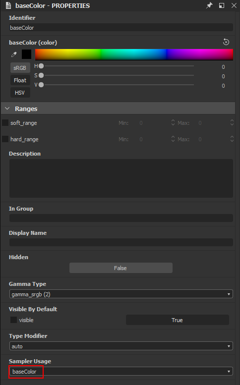
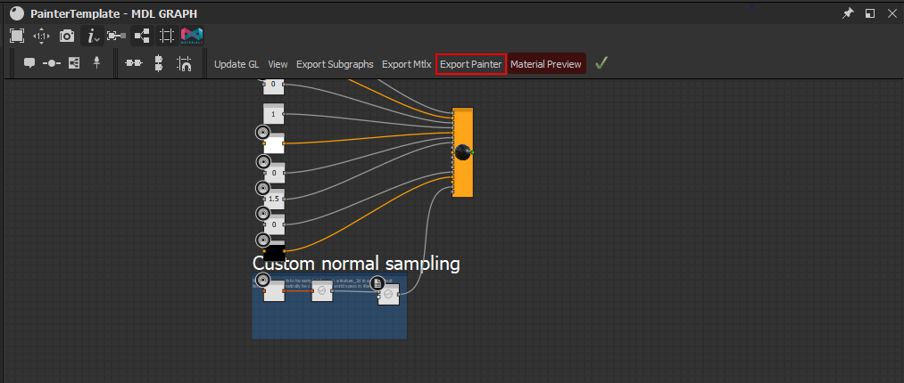
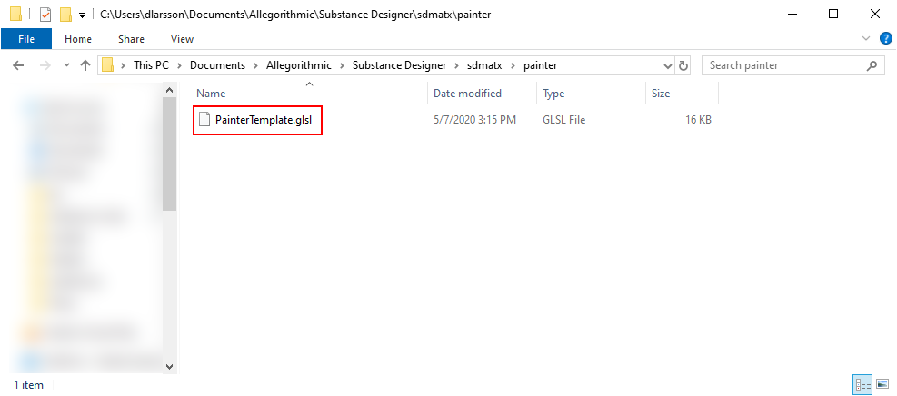
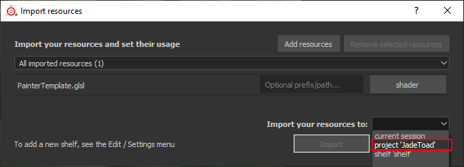
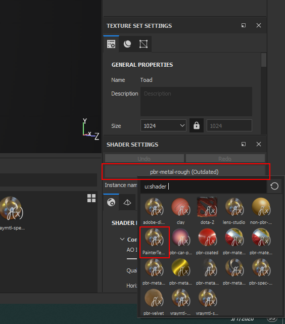
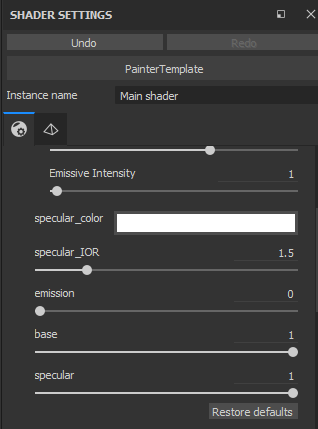
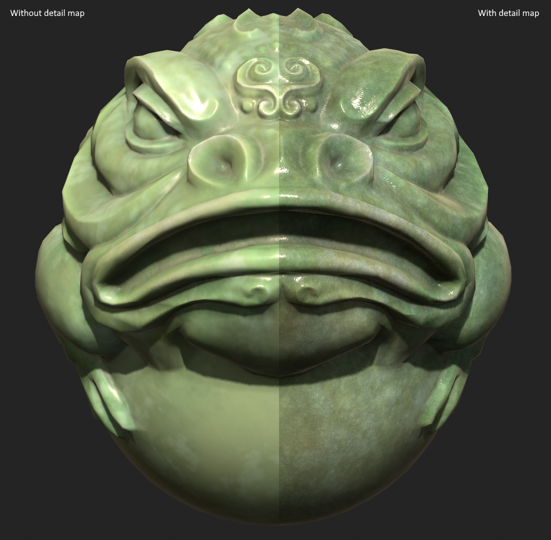

Painter Sample
The MaterialX Substance Designer plugin can generate Substance painter compatible GLSL files. It's somewhat limited and make sure to check the Standard Surface implementation notes in the what is supported in the standard surface compatibility part of the documentation.
The Painter Template
There is a template file for making painter shaders compatible with standard
surface in the directory
sdmatxplugin/data/samples/PainterTemplate.sbs
. It's
meant to support the standard maps of a PBR metallic roughness project.
Load the shader in Substance Designer
Features of the shader
The shader is mainly constructed using a set of color and float inputs directly wired to a standard surface. This makes sense for a template it's setting up for adding effects to a shader. The main thing to notice are that some of the inputs are set up with Sampler Usage and some are not. The ones with a Sampler Usage will be mapped to textures and the ones without to constants. The sampler usage is available when selecting an exposed input. The openGL parameter sets whether the tangent space for the normal map is OpenGL or DirectX.

That image has the baseColor Sampler Usage meaning it will use the base color channel in painter. A full list of supported usages can be found in the Usage Mappings section in README.md
The exposed maps will be sampled using the corresponding channel in the painter project:
- basecolor
- roughness
- metalness
- emission_color
- normal_map
The exposed constants will be possible to tweak on the shader:
- base (multiplier for the base color)
- specular (multiplier for the specular effect)
- specular_color (color multiplier for the specular highlight on non-metallic parts)
- specular_IOR (IOR for non-metallic parts)
- emission (multiplier for the emission color)
The Normal map
The normal map is sampled from an exposed texture_2d node as opposed to a color constructor. It's an alternate way of accessing textures allowing you to select the uv to sample with. In this case we are not using that feature specific feature but we are trying to avoid the iRay default behavior in designer to convert colors with the normal usage to world space automatically which would make it incompatible with painter and the GL viewport in Substance Designer.
Using the shader
In order to use the shader, press the Export Painter Button in the UI

This will write out a file in named after the MaterialX Graph, in this case PainterTemplate, in the painter sub directory in the plugin document directory.

In order to use the file
- Start Substance Painter and load a project using PBR Metallic Roughness Maps
- Drag the exported GLSL file to the shelf and import it to the project

- Set the project to use the shader by opening the Shader Settings and select the imported PainterTemplate

If everything went right the shader appears similar to the default Painter PBR Shader. This means that the painted maps are properly passed through to the shader and used as inputs to it.
The exposed parameters are available in the Shader Settings and can be tweaked for the object globally.

This shader doesn't do much interesting, it is a template to get started from.
Detail Map Shader
In this sample file we are actually making use of the MaterialX graph to add a detail map to the shader.
Detail maps
A detail map is a texture blended with the base textures in order to apply additional high frequency details to hide lack of resolution in the base texture. It typically implemented as a tiled monochrome texture with some type of noise. Given its main contribution is seen when zooming in, the tiling is less likely to be seen.
Procedural Shaders
In this detail map shader you can either source your details from the a texture or a procedural fractal. The procedural fractal is computed in the shader program rather than by looking at a texture. This gives the benefit of it not being limited by the resolution of a texture and it can also avoid a lot of the tiling issues compared to a texture. One of the issues with procedural shaders is they don't necessarily deal with minification as well as ordinary textures meaning they can appear noisy when seen at a distance.
Overview of the shader
The structure of the shader is shared with the Painter Template so most of the basic features are set up the same way.

Detail Map Inputs
The detail map input section contains the exposed parameters for the detail map. It contains:
- A texture input for a detail map
- A texture input for a detail normal map
- A scaling for the UV set
- Blend factors for controlling to what extent it affects different shader features.
- texture_procedural_ratio to control to what extent the shader
- should use the detail texture or procedural map.
A value of 0 means all texture and 1 all procedural noise. Note that the normal is always taken from the detail normal image and there won't be any normal influence from the procedural details. It's messy to extract normals from textures and procedural way in a fully predictable way so the normal is a separate texture to avoid this.
The odd inputs are the texture_2d inputs called detail and detail_normal. They have detail and detail_normal respectively as sampler usage. These usages are not known by Substance Painter meaning it will not use any data from the texture sets but show up as an input on the shader itself. This is exactly the behavior we want since the very point of it is to tile it over the model rather than using unique texturing which is the case for known usages. Also note that the textures are sampled using an image node. This allows us to use our own UV's. In this case we use UV's with a scale applied.
Detail Map Scaling
This section controls how the UV's and position is scaled when applying details from textures and procedurals.
Detail Map Procedural Blending
This section we mix the detail texture and detail procedural.
Detail Map Blending
The detail map blends the base texture with the detail map, this is done individually for the affected texture to give more control over the effect. In this case the formula is base * (detail * intensity + (1.0 - intensity)) . This means that when detail is 1 it will return the base multiplied with the monochrome detail map and when it's 0 it will return the base without any details applied. Anything in-between will be a blend between those to values. An effect of this blending is applying details will always darken the original textures. This is often not the desired behavior since it might make the object look darker at a distance when the details are less visible. Note that often 1.0 is too strong of an effect and it's typically better to use a lower value to make the effect more subtle.
Using the Shader
To test out the shader in designer, load the file
data/samples/Painter/PainterTemplate.sbs
.
Make sure to bind the textures from the graph and make it current in the viewport and you should see a yellow box with some tiling variation. This is a good time to play with parameters to get different looks for the details.
When done experimenting in Designer you can export it to Painter using the Export Painter button. Like in the previous example it will be located in the painter sub directory in the plugin document directory.
Start Painter. In the images below we use the JadeToad asset bundled with painter. When you have loaded a project, import the shader to the project shelf. You can now assign it in the Shader Settings tab. By default you will se a little bit of noise on the model coming from the procedural.
Open up the Shader Settings and now you can see the inputs for the detail map show up.
Here we can control the different parameters of the detail map. The first thing to note is that the detail texture input is now showing up as a shader input. You can bring in your own images or select something from the shelf and plug in there. Note, shader texture input slots only work with images and not general procedurals from the shelf. This is a limitation in Painter. If you are not sure of how to correctly connect things, make sure you import an image as a texture to your shelf for your detail map and detail normals.
When tweaking the details themselves, it's often a good idea to pull the detail_color all the way to 1, this will give the strongest effect. From there you can start tweaking scaling, ratio between the procedural and texture noise etc. When that looks good, you can tone down the color effect and change how it interacts with the other texture channels which tend to be more subtle

This image shows the detail map disabled on the left and enabled on the right It's a subtle effect but there it's useful to cover up lack of texture and make the object more interesting.